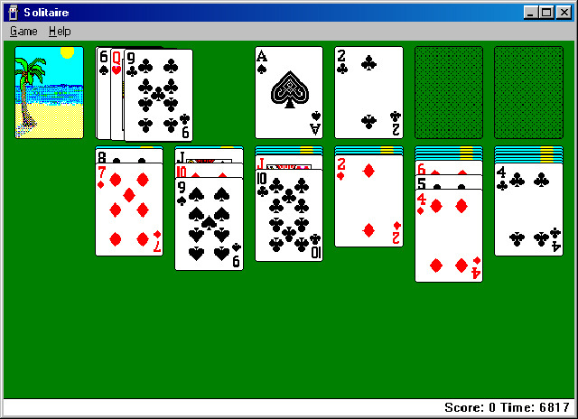

https://laughingsquid.com/solitaire-exe-a-real-deck-of-cards-inspired-by-the-windows-98-solitaire-pc-game/

http://www.mobygames.com/game/win3x/microsoft-windows-31-included-games/screenshots/gameShotId,693498/

http://www.uvlist.net/groups/info/patiencesolitaire

http://tabardit.co.uk/windows-98-on-your-state-of-the-art-pc/
Microsoft Solitaire is a computer game included with Microsoft Windows, based on a card game of the same name, also known as Klondike.
Microsoft has included the game as part its Windows product line since Windows 3.0, starting from 1990. The game was developed in 1989 by an intern. The card deck itself was designed by Macintosh pioneer Susan Kare.
One common concern with the game was the potential loss of business productivity by employees playing Solitaire. Studies conducted as a result of this concern revealed that playing the game can actually boost productivity.